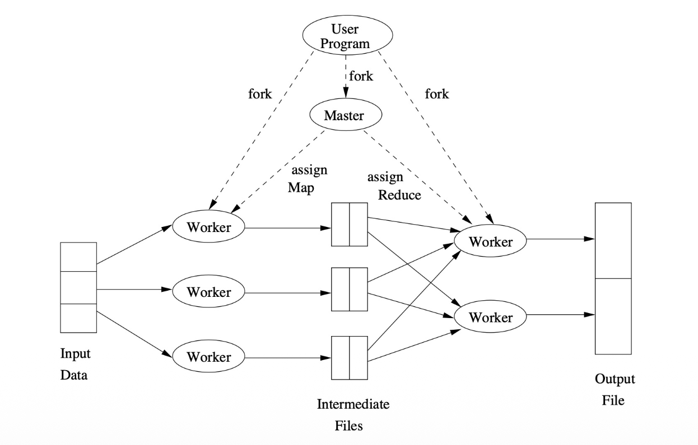
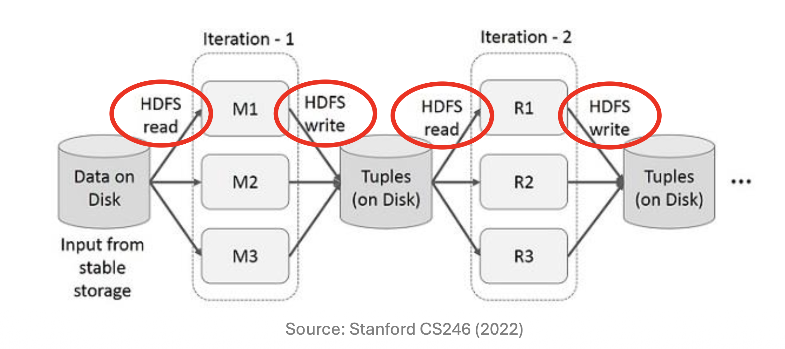
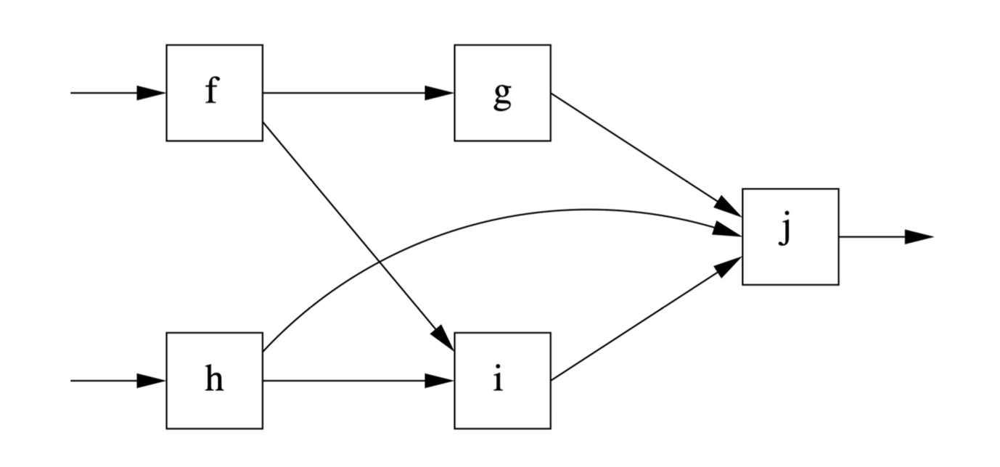
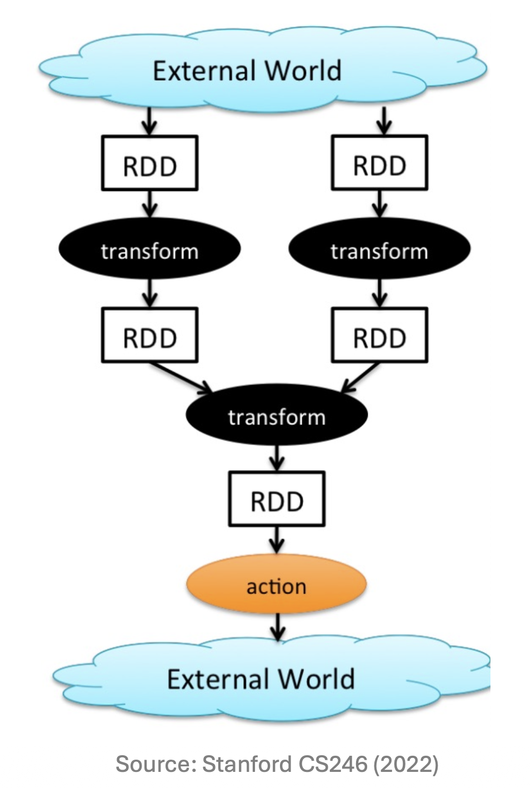

1. Introduction
- 본 포스트는 대용량 데이터 처리 및 데이터 마이닝을 위한 핵심 프레임워크인 Apache Spark의 개요(Overview)를 다룹니다. 분산 처리 시스템의 발전 과정을 이해하기 위해서는 기존의 패러다임이었던 하둡(Hadoop)과 MapReduce의 구조를 먼저 짚고 넘어갈 필요가 있습니다. 기존 시스템이 가진 근본적인 디스크 I/O 병목 현상을 파악하고, 이를 방향성 비순환 그래프(DAG, Directed Acyclic Graph)와 메모리 기반(In-memory) 연산을 통해 어떻게 극복했는지 그 논리적 흐름을 따라가 보겠습니다.
2. Hadoop Framework와 MapReduce의 구조
- 아파치 하둡(Hadoop)은 대규모 데이터의 분산 처리를 위해 설계된 오픈소스 프레임워크입니다. 초창기 하둡 생태계에서 데이터 처리 로직은 MapReduce 엔진과 매우 강하게 결합(tightly coupled)되어 있었습니다. 하둡 프레임워크는 크게 세 가지 핵심 컴포넌트로 구성됩니다:
- HDFS (Hadoop Distributed File System): 거대한 데이터셋을 여러 클러스터 노드에 분산하여 저장하며, 데이터 유실을 막기 위해 복제본(Replication)을 유지합니다.
- YARN (Yet Another Resource Negotiator): 클러스터 내 여러 노드의 리소스를 관리하고 작업 스케줄링을 담당합니다. 현대 하둡 시스템에서 “마스터 컨트롤러(Master controller)”라 함은 주로 이 YARN을 지칭합니다.
- Processing Engines: 실제 연산 작업(Computation)을 수행하는 엔진으로, MapReduce와 Spark가 대표적입니다.
3. MapReduce의 근본적 한계 (Limitations of MapReduce)
- MapReduce는 단순하고 강력하지만, 복잡한 데이터 마이닝이나 머신러닝 알고리즘을 수행하기에는 몇 가지 치명적인 구조적 한계를 지니고 있습니다.
3.1 디스크 I/O로 인한 오버헤드
MapReduce는 맵(Map) 태스크와 리듀스(Reduce) 태스크 사이의 중간 생성물(Intermediate files)을 메모리가 아닌 디스크에 저장합니다.
각 Map 태스크의 출력 결과는 해당 워커(Worker) 노드의 로컬 파일 시스템에 기록됩니다.
장점(Pros): 메인 메모리(RAM) 요구량이 적어, 메모리가 부족한 환경에서도 안정적으로 대용량 작업을 수행할 수 있습니다.
단점(Cons): 매 Map 태스크가 끝날 때마다 발생하는 디스크 I/O 오버헤드가 막대합니다. 만약 워커 노드에 장애가 발생하면 해당 디스크에 저장된 중간 파일에 접근할 수 없게 되는 문제도 발생합니다.

3.2 반복(Iterative) 알고리즘 적용의 어려움
- 특히 머신러닝 최적화(예: Gradient Descent) 알고리즘은 동일한 데이터에 대해 연산을 수십~수백 번 반복해야 합니다.
- MapReduce는 복잡한 작업을 수행할 때, 데이터 복제(Replication)와 디스크 입출력으로 인해 막대한 오버헤드를 발생시킵니다.
- 결과적으로 많은 최신 알고리즘들을 단순히 Map과 Reduce라는 두 가지 단계만으로 표현하고 설명하기는 매우 어렵습니다.

4. 차세대 대안: Workflow System과 DAG
- MapReduce의 경직된 체인 구조(Map \(\rightarrow\) Reduce \(\rightarrow\) Map \(\rightarrow \dots\))를 극복하기 위해 제안된 것이 방향성 비순환 그래프(DAG) 기반의 Workflow System입니다.
4.1 DAG(Directed Acyclic Graph)로의 확장
- 이 시스템에서는 연산들이 DAG 형태로 구성됩니다. DAG 행렬 \(G = (V, E)\)에서 정점 \(V\)는 각 태스크를, 간선 \(E\)는 데이터의 흐름을 의미합니다.
- 단일 입력만 받던 한계를 벗어나, 하나 이상의 다중 입력을 받는 함수들을 허용합니다.
- 마스터 컨트롤러는 전체 DAG를 분석하여 여러 태스크 간의 작업을 효율적으로 분할하고 할당합니다.

4.2 내결함성을 위한 차단 특성 (Blocking Property)
- 분산 시스템에서 노드 실패는 필연적입니다. Workflow 시스템은 Blocking Property를 통해 결함 복원력(Fault-resilient model)을 확보합니다.
- 특정 연산은 선행되는 모든 작업(Predecessors)이 완료되어야만 실행을 시작할 수 있습니다.
- 따라서 만약 어떤 태스크가 실패했다면, 그 후행 작업(Successors)은 아직 시작조차 하지 않았음을 논리적으로 보장할 수 있습니다.
- 복구 메커니즘: 마스터 컨트롤러는 실패한 태스크를 다른 건강한 노드에서 재시작시킵니다. 예를 들어, 위 DAG 도식에서 노드 \(g\)가 실패한다면, 선행 노드인 \(f\)를 다시 실행한 뒤 그래프의 흐름을 따라 \(g\)를 재실행하면 완벽한 복구가 가능합니다.
5. Apache Spark: Overview & Ecosystem
- Apache Spark는 단순히 MapReduce를 대체하는 것을 넘어, 훨씬 더 유연하게 설계된 가장 인기 있는 Workflow System입니다. UC Berkeley와 Databricks에서 개발되어 현재는 Apache 소프트웨어 재단에서 유지보수하고 있습니다.
5.1 Spark의 주요 혁신 포인트
- 기존 MapReduce에 대비하여 Spark가 추가/개선한 핵심 요소는 다음과 같습니다:
- 초고속 데이터 공유(Fast data sharing): 중간 연산 결과를 디스크에 저장하는 것을 피하고 메모리에 유지합니다.
- 데이터 캐싱(Data Caching): 머신러닝(ML) 알고리즘처럼 동일한 쿼리가 반복되는 경우, 데이터를 메모리에 캐시(Cache)하여 성능을 극대화합니다.
- 일반화된 실행 그래프 (General DAGs): Map과 Reduce보다 훨씬 풍부하고 다양한 함수 연산을 지원하는 DAG 실행 엔진을 제공합니다.
- Hadoop 호환성: 하둡 HDFS 등 기존 분산 파일 시스템과 완벽히 호환됩니다.
5.2 Data Analytics Software Stack
- Spark 생태계는 매우 방대하며, 하나의 통합된 Core API 위에서 다양한 고수준 라이브러리를 제공합니다.
| 계층 (Layer) | 구성 요소 (Components) |
|---|---|
| Data Analytics | SparkSQL & DataFrames, MLlib (머신러닝), GraphX (그래프 연산), Spark Streaming, SparkR |
| Core API | Spark Core |
| Resource Management | Standalone, Hadoop YARN, Mesos, Kubernetes, Amazon EC2 |
| Database / Storage | Hadoop HDFS, Apache Cassandra, Apache HBase, Apache Hive, Amazon S3 |
6. RDD (Resilient Distributed Dataset)
- Spark를 이해하는 데 있어 가장 중요한 핵심 아이디어이자 중심 데이터 추상화 개념이 바로 RDD입니다.
- 정의: 단일 타입의 레코드들로 이루어진, 파티셔닝(분할)된 데이터 컬렉션입니다.
- 일반화: MapReduce에서 사용되던 단순한 Key-Value 쌍의 개념을 훨씬 더 범용적으로 일반화한 형태입니다.
- 특성:
- 데이터 청크 단위로 전체 클러스터에 분산되어 저장되며, 생성된 후에는 변경할 수 없는 읽기 전용(Read-only/Immutable) 속성을 가집니다.
- 작업 속도 향상을 위해 메인 메모리(RAM)에 캐시(Cached)될 수 있습니다.
- 생성 방법: 분산 파일 시스템(DFS)에서 직접 데이터를 읽어오거나, 다른 RDD에 변환(Transformation)을 가함으로써 새롭게 생성됩니다.
- 동일한 연산 로직을 컬렉션 내의 모든 요소에 병렬로 적용할 때 최고의 성능을 발휘합니다.
7. Spark의 프로그래밍 모델: Transformation vs. Action
- Spark 프로그램은 RDD의 연산 흐름을 설계하는 과정이며, 크게 두 가지 유형의 연산으로 나뉩니다.
7.1 Transformations (변환)
- 다른 RDD로부터 새로운 RDD를 구축하는 연산입니다.
- 특징: 병렬 처리가 가능한 결정론적(Deterministic) 연산입니다.
- 종류:
map,filter,join,union,distinct등이 존재합니다. - 지연 평가 (Lazy Evaluation) \(\star\):
- 가장 중요한 특징으로, Transformation 코드를 작성하더라도 즉시 실행되지 않으며, 뒤이어 설명할 “Action”이 호출되기 전까지는 어떠한 실제 계산(Computation)도 수행되지 않습니다.
- 수식으로 표현하면 초기 상태 \(RDD_0\)에서 \(T(RDD_i) \rightarrow RDD_{i+1}\)의 연산 계획(Lineage)만 그래프 형태로 누적됩니다.
7.2 Actions (행동)
- 실제로 스케줄러를 구동하여 계산을 강제(force calculations)하고 결과값을 반환하거나 외부 저장소로 데이터를 내보내는 연산입니다.
- 특징: Action이 호출되는 순간, 이전에 누적된 지연된 Transformation들이 한 번에 최적화되어 병렬로 실행됩니다.
- 종류:
count,collect,reduce,save등이 있습니다.
